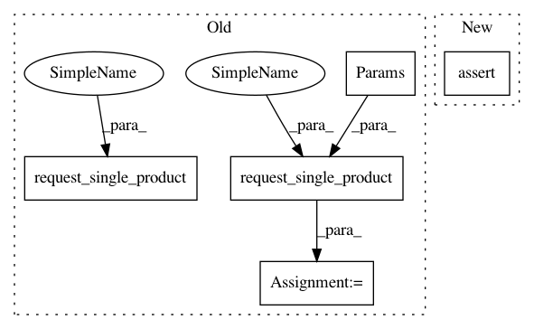

ddee4ac4fa7a0affafe35bbcdc36d499dd2f0334,src/python/pants/engine/internals/graph_test.py,TestSpecsToAddresses,test_filesystem_specs_nonexistent_file,#TestSpecsToAddresses#,420
Before Change
def test_filesystem_specs_nonexistent_file(self) -> None:
specs = FilesystemSpecs([FilesystemLiteralSpec("demo/fake.txt")])
with pytest.raises(ExecutionError) as exc:
self.request_single_product(
AddressesWithOrigins, Params(specs, create_options_bootstrapper()),
)
assert "Unmatched glob from file arguments: "demo/fake.txt"" in str(exc.value)
ignore_errors_result = self.request_single_product(
AddressesWithOrigins,
Params(specs, create_options_bootstrapper(args=["--owners-not-found-behavior=ignore"])),
)
assert not ignore_errors_result
def test_filesystem_specs_no_owner(self) -> None:
self.create_file("no_owners/f.txt")
After Change
self.resolve_filesystem_specs([spec])
assert "Unmatched glob from file arguments: "demo/fake.txt"" in str(exc.value)
assert not self.resolve_filesystem_specs(
[spec],
bootstrapper=create_options_bootstrapper(args=["--owners-not-found-behavior=ignore"]),
)
def test_filesystem_specs_no_owner(self) -> None:
self.create_file("no_owners/f.txt")
// Error for literal specs.
In pattern: SUPERPATTERN
Frequency: 4
Non-data size: 5
Instances
Project Name: pantsbuild/pants
Commit Name: ddee4ac4fa7a0affafe35bbcdc36d499dd2f0334
Time: 2020-08-07
Author: 14852634+Eric-Arellano@users.noreply.github.com
File Name: src/python/pants/engine/internals/graph_test.py
Class Name: TestSpecsToAddresses
Method Name: test_filesystem_specs_nonexistent_file
Project Name: pantsbuild/pants
Commit Name: 9516dff4df4a1af55be1c456fc45783357c582f6
Time: 2020-06-25
Author: 14852634+Eric-Arellano@users.noreply.github.com
File Name: src/python/pants/backend/python/rules/python_sources_test.py
Class Name: UnstrippedPythonSourcesTest
Method Name: test_filters_out_irrelevant_targets
Project Name: pantsbuild/pants
Commit Name: ddee4ac4fa7a0affafe35bbcdc36d499dd2f0334
Time: 2020-08-07
Author: 14852634+Eric-Arellano@users.noreply.github.com
File Name: src/python/pants/engine/internals/graph_test.py
Class Name: TestSpecsToAddresses
Method Name: test_filesystem_specs_no_owner
Project Name: pantsbuild/pants
Commit Name: 9516dff4df4a1af55be1c456fc45783357c582f6
Time: 2020-06-25
Author: 14852634+Eric-Arellano@users.noreply.github.com
File Name: src/python/pants/backend/python/rules/python_sources_test.py
Class Name: StrippedPythonSourcesTest
Method Name: test_filters_out_irrelevant_targets